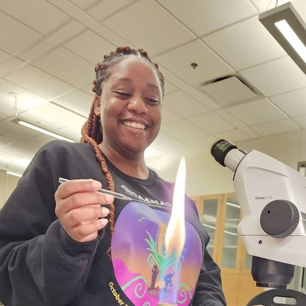
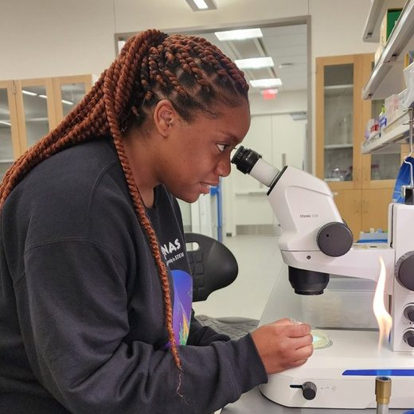

Microbial Mosaic
I’m Karen Tembiwa, a bacteriologist by training, and interested in how bacteria work, adapt, and differ from one cell to the next.
My current role is Postdoctoral Researcher at UiT The Arctic University of Norway, working in the lab of Dr. Christian Lentz. My research background is primarily in bacterial cell-envelope biology, and I’m drawn to questions that connect molecular mechanisms with the bigger picture of microbial life.
Microbial Mosaic is the name I’m growing into for my academic work: a place for curiosity, creativity, research, useful resources, and the occasional unexpected result that turns into an even more interesting question.


Recent log (news)
Talks, papers, awards and milestones.
- Career
Joined UiT The Arctic University of Norway as a postdoctoral researcher, working with Dr. Christian Lentz.
- Publication
First-author paper published in Journal of Bacteriology: PgfA regulates polar peptidoglycan synthesis as well as mycolate synthesis in Mycobacterium smegmatis. Read the paper ↗
- TalkJune
Gave an oral presentation at ASM Microbe 2026 (Washington, DC) on PgfA and the coordination of the mycobacterial cell envelope.
- MilestoneMay
Completed my PhD in Quantitative Biology at the University of Texas at Arlington. Read the dissertation ↗